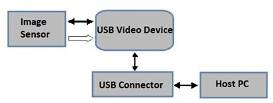
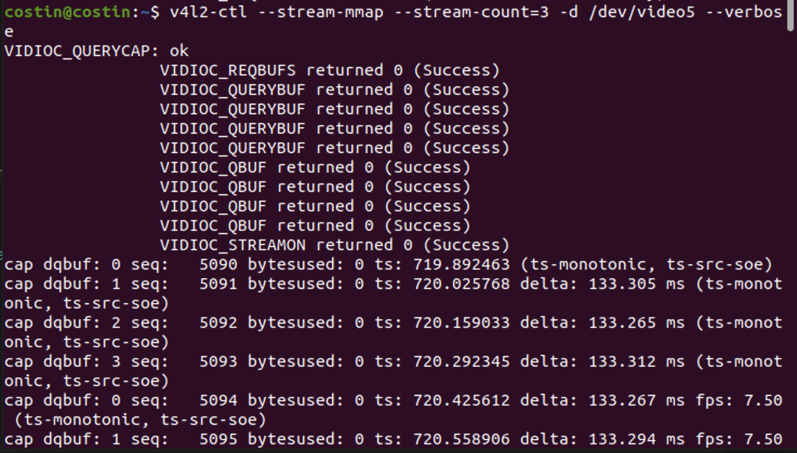
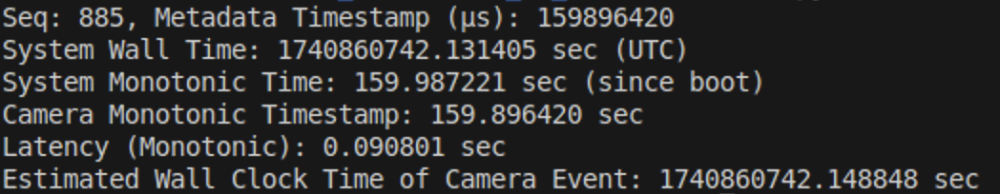

I have to extract the timestamp from an ArduCam B0497 (USB 8.3 MP) for synchronization purposes inside SeaClear
What is a UVC camera?
From ChatGPT: UVCH / uvch264 is a term used to describe enhanced support for H.264 video streaming in UVC devices under Linux. While you can’t modify the camera’s internal clock or encoding in hardware, using uvch264 (or a similarly capable driver) ensures that the H.264 stream is handled optimally by your operating system.
UVC cameras (USB video class) are USB-powered devices that incorporate standard video streaming functionality and connect seamlessly with host machines (makes sense because of the USB which would mean no additional drivers). In my case, it’s version 1.1

Extracting the hardware timestamps
How do I exactly extract the timestamps?
Using v4l2 - an open source library that can make direct calls to the memory such as requesting buffers, query and queue them, start streaming and dequeue (in that exact order).
Open the metadata device (/dev/video5) to access the UVC metadata stream.
Request buffers (VIDIOC_REQBUFS) to allocate memory for metadata capture.
Query buffer details (VIDIOC_QUERYBUF) to check buffer properties.
Queue a buffer (VIDIOC_QBUF) so it can be filled with metadata.
Start streaming (VIDIOC_STREAMON) to begin metadata collection.
Dequeue the buffer (VIDIOC_DQBUF) to retrieve the latest metadata packet.
Extract the timestamp which is generated by the camera’s internal monotonic clock.

Apparently, it works through 4 buffers which ensures they exist and are properly mapped. It also allows continuous metadata streaming without data loss (in the image above, there is no jump in sequences.)
What would happen if it only used 1 buffer?
Higher risk of missing timestamps if a buffer isn’t dequeued fast enough.
Less efficient metadata streaming, since the camera waits for a free buffer.
More CPU overhead, as you must dequeue/requeue a buffer as fast as possible.
Converting to wall time
The stream is operated by my operating system and as it is an USB Camera, it follows the internal clock of the host machine (in my case — Ubuntu on my VM).
Must Consider
The metadata timestamp is monotonic (starts from boot and is unaffected by system time adjustments).
System time is wall-clock time(UTC-based).

As mentioned in system monotonic clock, I need to compute a Offset = CLOCK_REALTIME - CLOCK_MONOTONIC and add it to my camera’s timestamps everytime.
How do I test all this?
I will point the camera at my monitor and record the unix timestamp. I will include the video in a rosbag with the timestamps assigned to each frame and see if there is significant drift.
HOW TO
Before capturing raw frames from the camera, I transpose the data to rosrun image_transport republish raw in:=/usb_camera/image_raw compressed out:=/camera/image_compressed — this way, I compress high resolution stream and can record more and save space on my laptop.
rosrun rov_tf_tree camera_sync_recorder.py — Start the streaming